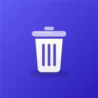
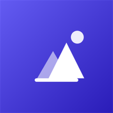
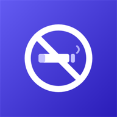

Catalog
All free to use, with no ads and with their code on GitHub. If an app is in a store, the link takes you there; if not, to its download page.
Android
A light, private file explorer: copy, move, search and share, with no ads.
On Google Play
260 tests · 66 % of the app covered · ~6 h of LLM
Android
Your SMS app that also forwards the messages you choose to another number.
On Google Play
135 tests · 72 % of the app covered · ~8 h of LLM
Android · Windows · Browser
Your passwords and verification codes, encrypted and yours alone, on your phone and PC.
On Microsoft Store, Edge Add-ons and other browsers
401 tests · 82 % of the app covered · ~13 h of LLM
Windows
Your Android phone's screen on Windows, controlled with your mouse and keyboard.
On Microsoft Store
223 tests · 93 % of the app covered · ~5 h of LLM
Windows
Your remote desktops, SSH terminals and file servers, in tabs and in a single window.
On Microsoft Store
979 tests · 99 % of the app covered · ~11 h of LLM

Android · Windows
Check several apps and uninstall them all at once, on your phone and your PC.
On Google Play
267 tests · 51 % of the app covered · ~9 h of LLM
Android · Windows
Your tasks on your phone and your computer, with the same account.
On Microsoft Store
454 tests · 96 % of the app covered · ~27 h of LLM
Android
Open and read text, logs, JSON and code instantly, with no ads and no accounts.
On Google Play
166 tests · 93 % of the app covered · ~4 h of LLM

Android
Your family on the map, in a closed, end-to-end encrypted group.
Download on GitHub
515 tests · 88 % of the app covered · ~10 h of LLM

Android
Record your routes with GPS, snap them to the trails and follow them again.
Download on GitHub
176 tests · 79 % of the app covered · ~13 h of LLM
Android · Android Auto
The music on your phone, by artist or composer, with playlists and in the car.
Download on GitHub
218 tests · 37 % of the app covered · ~6 h of LLM
Android
Read your PDFs with no ads and no accounts: everything stays on your device.
Download on GitHub
151 tests · 84 % of the app covered · ~6 h of LLM

Android
Cut down on smoking little by little: space out your cigarettes and save money.
Download on GitHub
73 tests · 79 % of the app covered · ~4 h of LLM
Windows
Record what you do with the mouse and keyboard and let it repeat by itself.
Download on GitHub
301 tests · 95 % of the app covered · ~5 h of LLM
Windows
Any program as a Windows service: it starts it with the PC, watches it and brings it back if it crashes.
Download on GitHub
286 tests · 66 % of the app covered · ~6 h of LLM
Android · Android TV
Spanish free-to-air TV channels live, on your phone, tablet and TV.
Download on GitHub
144 tests · 53 % of the app covered · ~4 h of LLM